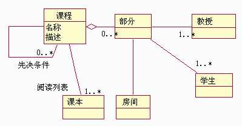

| 工作产品：分析类 |
 |
|
用途
关系
主要描述
| 分析类指定早期概念模型的元素，表示“系统中有职责和行为的事物”。它们表示系统的原型类，是系统必须处理的主要抽象的“第一遍”。如果希望对系统进行“高度”的概念性概述，则可以对分析类本身进行维护。分析类还允许进行系统设计的主要抽象化：系统的设计类及子系统。 |
属性
| 可选 | |
|---|---|
| 已计划 |
定制
| 说明选项 | UML 说明：类，构造型为 <<boundary>>、<<entity>> 或 <<control>>。 分析类可能有以下属性：
分析类组合在一起就表示早期的系统概念模型。该概念模型快速演化并在一段时间内保持灵活性，同时探索不同的表示法及它们的含义。正式文档可能会阻碍该流程，所以请正式地仔细计划维护该“模型”将花多少精力；您会浪费大量时间来完善很不必要的模型。分析类很少在设计中保持不改动。许多分析类代表着对象的整体协作，这通常由子系统封装。 通常，简单的注释卡片（如下例中所示）就足够了（这基于众所周知的 CRC 卡片技术 － 参阅 [WIR90] 可了解有关该技术的详细信息）。在卡片的正面，记录类的名称和描述。下面列出了课程注册系统中的课程示例：
在卡片的背面，绘制类图：  课程的类图 对于用例分析研讨会期间发现的每个类，只有一个分析类卡片。 |
|---|
更多信息
© Copyright IBM Corp. 1987, 2006. All Rights Reserved. |